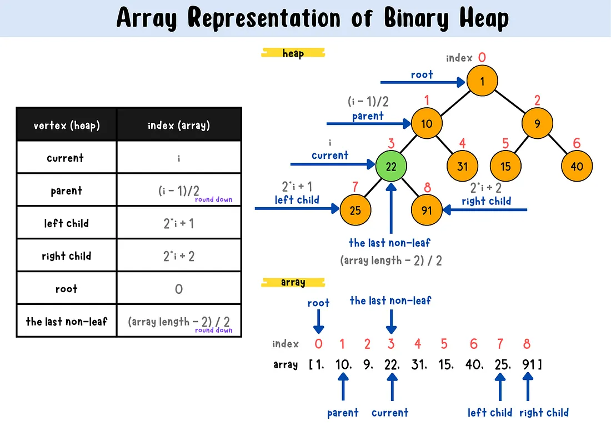

🌳 Binary Heap as a Priority Queue¶
📖 Why Codexion needs one¶
Both fifo and edf scheduling need to answer one question fast, repeatedly:
"which waiting coder should get this dongle next?"
A naive approach (loop through all waiters to find the minimum) works but is
O(n) per pick. A binary heap gives O(log n) insert and extract — and,
more importantly, the subject forbids using a standard library priority queue
(there isn't one in C anyway, but the point stands: you must build it yourself).

🌲 What a binary heap actually is¶
A min-heap is a binary tree with one property, and only one: every parent is smaller than (or equal to) both of its children. That's it — that's the entire rule. Nothing is said about how left and right children compare to each other, or about any ordering across branches. This is what makes a heap different from (and cheaper than) a fully sorted structure like a binary search tree — a heap only guarantees the top is right, not that everything below is in order.
3
/ \
5 8
/ \ / \
9 7 10 12
Every parent (3, 5, 8) is smaller than its children. Notice 5 and 8 aren't compared to each other directly — that's fine, the heap property doesn't require it. Only the path from any node up to the root matters.
Why it's called "complete" and why that matters¶
A heap is a complete binary tree: every level is fully filled except
possibly the last, and the last level fills left-to-right with no gaps. This
one constraint is what allows the entire tree to live in a flat array,
with no pointers, no left/right fields, no wasted memory:
index: 0 1 2 3 4 5 6
value: 3 5 8 9 7 10 12
The tree drawn above and this array are the exact same structure. The relationships are pure arithmetic:
parent(i) = (i - 1) / 2
left(i) = 2*i + 1
right(i) = 2*i + 2
Try it: left(0) = 1 (value 5), right(0) = 2 (value 8) — matches the tree.
parent(3) = 1 (value 5) — node at index 3 (value 9) is a child of node at
index 1 (value 5) — matches the tree. This is why array-based heaps are so
common: you get a tree's logarithmic behavior with an array's simplicity and
cache-friendliness, no malloc per node needed.
What "priority" means here — this is domain-specific, not built into the heap¶
The heap itself doesn't know or care what the numbers mean. For Codexion, you
choose what the priority key represents:
- FIFO mode → arrival timestamp (whoever asked first has the smallest
timestamp, so they sit closest to the root)
- EDF mode → deadline (last_compile_start + time_to_burnout — whoever is
closest to burning out has the smallest deadline, so they sit closest to
the root instead)
The heap's mechanics (sift-up, sift-down) never change between these two modes — only what you compare changes. This is worth sitting with: the data structure is completely reusable, the comparison is the only domain-specific piece.
⬆️⬇️ The two core operations, traced through an example¶
Insert (sift-up / bubble-up)¶
When it's used: right after a new element is added at the very bottom (end) of the array — it needs to travel up to its correct spot.
Start from this heap: [3, 5, 8, 9, 7, 10, 12]. Insert 4.
- Place it at the end of the array (the next open leaf position, keeping
the tree complete):
[3, 5, 8, 9, 7, 10, 12, 4]— index 7. - Compare with its parent.
parent(7) = (7-1)/2 = 3, value9. Since4 < 9, they violate heap order — swap them:[3, 5, 8, 4, 7, 10, 12, 9] - Repeat, now from index 3.
parent(3) = 1, value5. Since4 < 5, swap again:[3, 4, 8, 5, 7, 10, 12, 9] - Repeat, now from index 1.
parent(1) = 0, value3. Since4 > 3, stop — heap property restored.
Notice the element only ever moves up a chain from leaf toward root,
comparing against ancestors — never sideways, never down. That single upward
path is why this is O(log n): the height of a complete tree with n nodes
is log n, so the element crosses at most log n levels.
Extract-min (sift-down / bubble-down)¶
When it's used: right after removing the root (the min) and moving the last leaf into its place — that displaced element needs to sink down to where it actually belongs.
Start from [3, 4, 8, 5, 7, 10, 12, 9]. Extract the minimum.
- The root (index 0) is always the answer — that's the entire point of
the heap property. Save it:
3. - Move the last element into the root's spot, then shrink the array by
one: take
9(the last element) and put it at index 0:[9, 4, 8, 5, 7, 10, 12] - Compare the new root against both children, swap with whichever child
is smaller (not just "a" child — if you swap with the wrong one, you can
create a new violation on the other branch).
left(0)=4,right(0)=8— smaller is4. Since9 > 4, swap:[4, 9, 8, 5, 7, 10, 12] - Repeat from index 1.
left(1)=3(value5),right(1)=4(value7) — smaller is5. Since9 > 5, swap:[4, 5, 8, 9, 7, 10, 12] - Repeat from index 3.
left(3)=7— out of bounds (array has 7 elements, indices 0-6). No children left — stop.
The one detail that trips people up¶
In sift-down, you must compare against both children and pick the smaller one to swap with — comparing against only the left child (or only whichever you check first) can silently produce an invalid heap that still "looks" mostly right in casual testing, but breaks under specific input orders. This is the single most common heap bug — worth testing deliberately, not just trusting that it works because it compiled.
🧩 Breaking this into functions (thinking through the 5-per-file limit)¶
The theory above describes four distinct pieces of behavior: inserting, extracting, sifting up, and sifting down. That doesn't automatically mean four functions — it means four responsibilities you need to account for somewhere. How you group them is a real design decision, not something the theory dictates. A few honest options, with their tradeoffs:
Option A — one function per responsibility (4 functions):
heap_push, heap_pop, sift_up, sift_down as fully separate functions,
with heap_push calling sift_up internally and heap_pop calling
sift_down internally. Cleanest separation, easiest to test each piece in
isolation, but costs you 4 of your 5-per-file budget before counting
initialization or anything else in the same file.
Option B — fold the sift logic into push/pop (2 functions):
heap_push contains its own sift-up loop inline, heap_pop contains its own
sift-down loop inline. Saves two functions, but each of heap_push/heap_pop
gets longer — worth checking against the 25-line-per-function limit once
written, since sift-down alone (comparing both children, tracking indices) is
not trivial.
Option C — something in between:
Keep sift_down separate (it's the more complex, more error-prone one — see
the "detail that trips people up" above), but fold sift_up (simpler, single
comparison per level) directly into heap_push. 3 functions instead of 4.
There's no universally "correct" choice here — it depends on how long each function ends up once you actually write the comparisons and swaps, and how many other heap-related functions (initialization, anything scheduler- specific) need to live in the same file. Count what you actually have written before deciding definitively; it's easier to notice you're at 23 lines and need to split than to guess in advance.
Don't forget initialization¶
Beyond push/pop/sift, something needs to set up the heap itself before any of
this runs — allocating (or sizing) the underlying array, setting size to
zero, setting capacity. Whether this is its own function or folded into
wherever your dongles/waiting-queues get set up is worth deciding explicitly,
since it's one more responsibility competing for the same 5-function budget.
🧮 The shape of the structure (not the solution)¶
A heap needs, at minimum: somewhere to store entries, how many slots are currently used, and how many slots exist in total (so you know when you'd need to grow, or whether you can pre-allocate once and never resize):
typedef struct s_heap
{
t_entry *data;
int size;
int capacity;
} t_heap;
What goes inside t_entry is a design decision worth thinking through
yourself: do you store the priority value alongside a coder_id (lightweight,
but you then look the coder up elsewhere), or a direct pointer to the t_coder
(heavier coupling, but no extra lookup)? Either is defensible — the tradeoff is
"generic, reusable heap" vs. "heap that already knows about your domain."
⚠️ Things that are easy to get subtly wrong¶
- Off-by-one on the "no children left" check. A node has no left child
when
left(i) >= size; if it has a left child butright(i) >= size, it has only one child to compare against, not two. - Swapping with the wrong child in sift-down (see above) — the most common bug, and the hardest to notice without a deliberate test.
- Capacity vs. size.
number_of_codersbounds the maximum number of simultaneous waiters for any one dongle's queue — that bound is known upfront, which means you can decide whether a fixed-capacity array is enough or whether you actually need dynamic growth. - Comparator direction. A min-heap and a max-heap differ by a single
<vs>in the comparison — get it backwards and the heap "works" (no crashes) but silently serves the lowest-priority waiter first instead of the highest. This is a correctness bug, not a crash, so it won't show up unless you specifically check who gets served in what order. - Concurrent access. Multiple coder threads may push to (or the releasing thread may pop from) the same dongle's waiting structure — this needs the same kind of protection you've already used elsewhere for shared state.
🔗 Why this matters for Codexion¶
- "You must implement a priority queue (heap) for FIFO/EDF scheduling (no standard library priority queue may be used)" is an explicit mandatory requirement — this isn't optional infrastructure, it's graded directly
- The heap is what backs each dongle's waiting line — every time a dongle is requested, the requester is pushed; every time it's released, the top of the heap is popped and woken up
- A wrong comparator (max-heap instead of min-heap, or a wrong deadline formula) breaks fairness silently — the program still runs, still compiles, still passes a casual test run. This is exactly the kind of bug that only shows up under stress testing with many coders and tight timings
📚 Further reading¶
- Cormen et al., Introduction to Algorithms — heap chapter (build-heap, heapify)
- Any visualization tool for heaps (e.g., VisuAlgo) to see sift-up/down in action